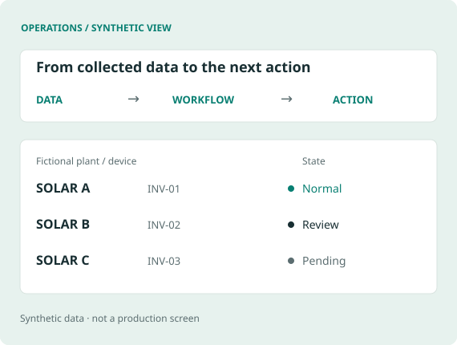

Operations monitoring
Consolidated data from multiple monitoring systems and made inverter-level status available through a web interface and Telegram.
In use · owner account
Read the case ↗BUSINESS CONTEXT → WORKING SYSTEMS
I learn how teams work, identify bottlenecks, and connect the people, data, and tools needed to solve them. My work spans renewable-energy operations, reporting automation, feasibility assessment, and AUDPlatform workflows for sales opportunities, contracts, orders, and weekly meetings.
CONNECT THE WORK

Consolidated data from multiple monitoring systems and made inverter-level status available through a web interface and Telegram.
Connected scheduled requests with response parsing and database ingestion to automate recurring reporting work.
Turned a broad request for address-based assessment into a service by learning the business workflow and integrating external data and financial analysis.
HOW I WORK
I use AI to support implementation and review, then validate results myself and with business users. I build and improve AUDPlatform workflows for sales opportunities, contracts, orders, and weekly meetings. I also take ownership of unfamiliar tasks, including an in-progress company website and explanatory videos, learning the tools needed to deliver them.
DOWNLOAD
Brief · English